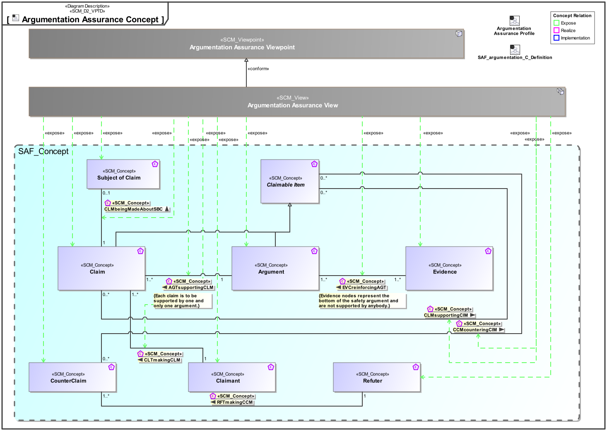
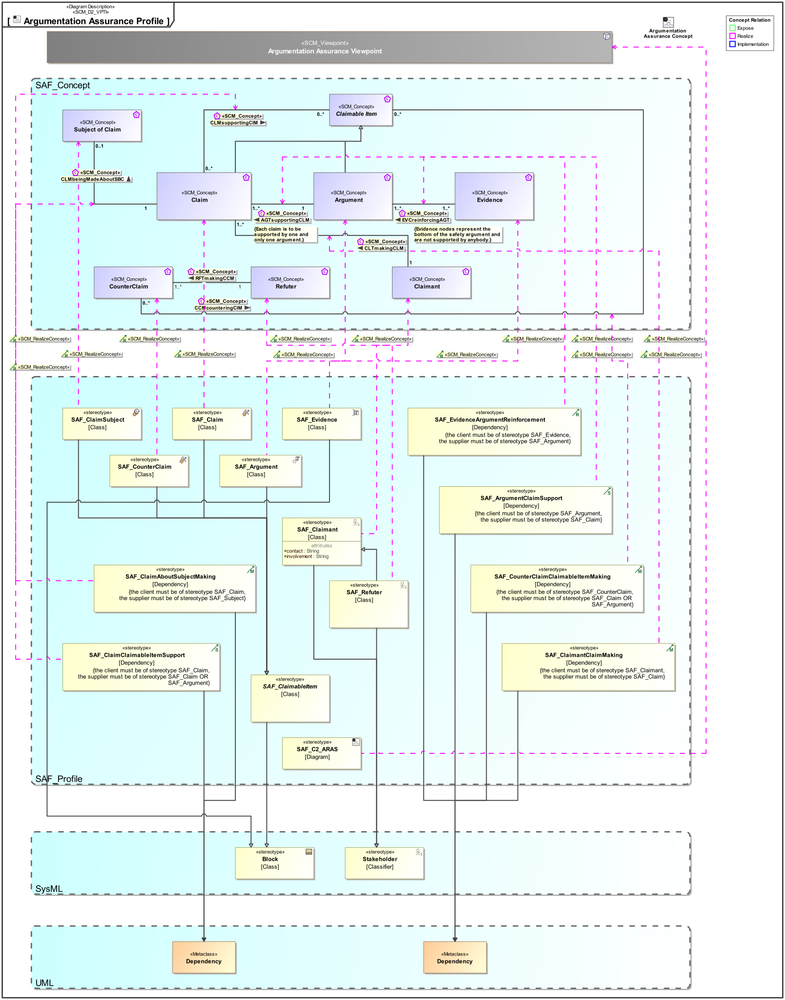

C2_ARAS Argumentation Assurance Viewpoint
| Domain | Aspect | Maturity |
|---|---|---|
| Common | Taxonomy & Structure |

The Argumentation Assurance Viewpoint presents claims backed up by arguments that are supported by evidence, together with the possibility to counter such claims in a similar manner.
The Argumentation Assurance Viewpoint supports the ability to present an evidence pattern, a structure of claims, arguments, and evidence, which is a common need in systems engineering. It applies equally to the establishment of traceability, definition of safety assurance cases, and even the presentation of business cases.
A block definition diagram (BDD) featuring a claim-argument-evidence pattern (CAE).
The following Stereotypes / Model Elements are used in the Viewpoint:
The Diagram shows the concepts exposed by the viewpoint, and related concepts if necessary.

| Concept | Documentation |
|---|---|
| AGTsupportingCLM | Specifies the fact that a claim is supported by one or more arguments via a claim-argument relation. |
| Argument | An argument is a rule that provides the bridge between what we know or are assuming (sub-claims, evidence) and the claim we are investigating. The argument used depends on the type, trustworthiness and extent of available evidence and the nature of the claim. |
| CCMcounteringCIM | Specifies the fact that any claimable item, e.g., claim, argument, and evidence, is countered by one or more claims. |
| Claim | A claim is a true/false statement about a property of a particular object. A claim is just what you might consider it to be from common usage of the term; an idea that someone is trying to convince somebody else is true. An example claim could be made on a train, e.g., the train is safe. |
| Claimant | A party asserting claims. |
| CLMbeingMadeAboutSBC | Specifies the fact that a claim is made about an identified subject matter. |
| CLMsupportingCIM | Specifies the fact that any claimable item, e.g., claim, argument, and evidence, is supported by one or more claims. |
| CLTmakingCLM | Specifies the fact that a claim is made by a defined claimant. |
| CounterClaim | A party's claim is a counter-claim if one party asserts claims in response to the claims of another. |
| EVCreinforcingAGT | Specifies the fact that an argument is reinforced by one or more evidence via a argument-evidence relation. |
| Evidence | An evidence is an artifact that establishes facts that can be trusted and lead directly to a claim. In projects there can many sources of information, but what makes this evidence is the support or rebuttal it gives to a claim. |
| Refuter | A party asserting counter-claims. |
| Subject of Claim | Note: A claim cannot be generic, it has to be about something, it has to have a defined subject, e.g., system safety. |
The Diagram shows the implementation of exposed concepts.
